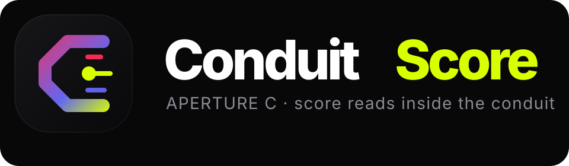
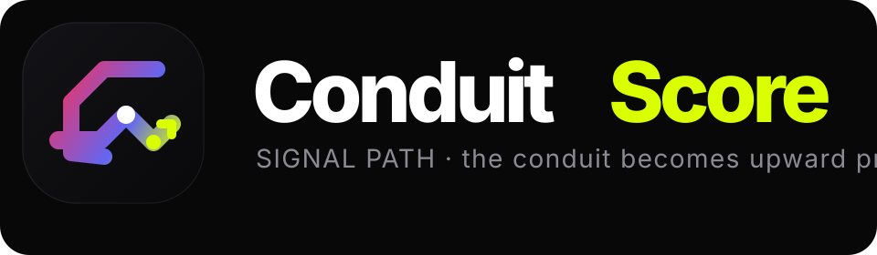
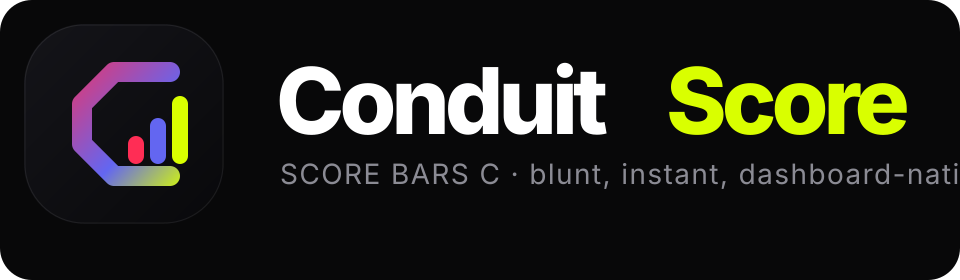
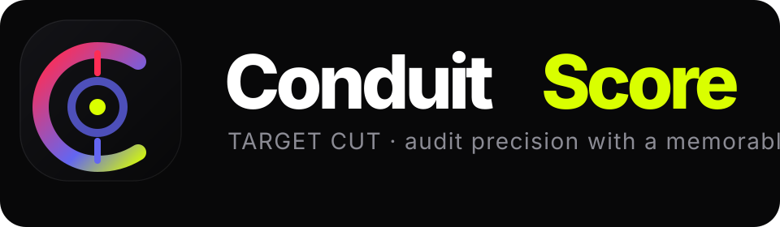
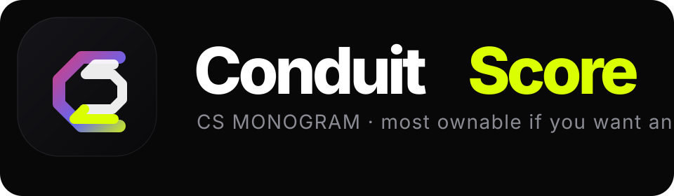

ConduitScore Logo Directions
Five cleaner directions built against the Gemini visual language: dark spectral surfaces, bold Syne typography, and a focused palette of Spectra Red, Neural Purple, and Cyber Lime. These are intentionally simple and favicon-friendly. No live site branding has been changed.



